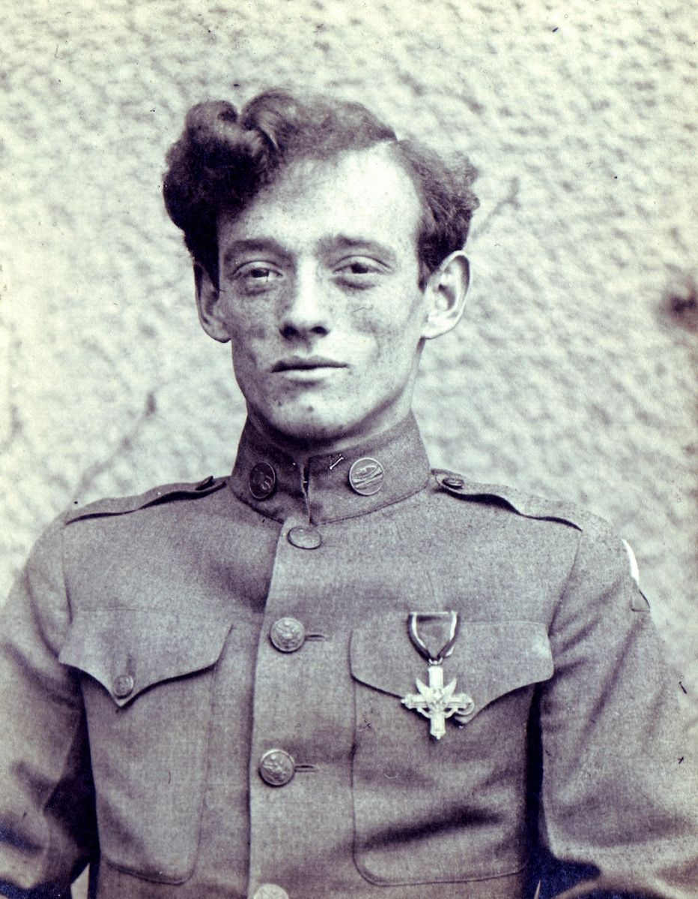
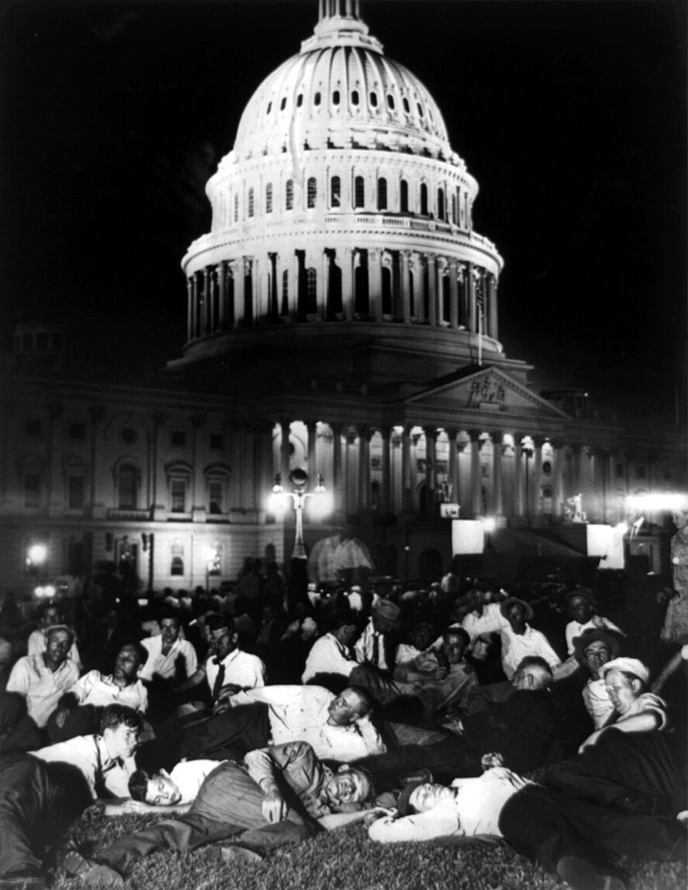

Joseph Angelo was awared the Distinguished Service Cross for saving the life of Colonel Patton. He would go on to be one of the demonstrators against the unfair compensation of WWI veterans during the Bonus March. The protesters were met with violent opposition by the government they fought for.
The Bonus March was a series of protests in Washington DC led by WWI veterans who were unfarily compensated following their service which is a form of institutionalized oppression. They would be beaten, and some killed, which is an example of interpersonal oppression. The war ended in 1918, and they were payed in 1945, meaning it took 27 years for them to be compensated. Even though their adjusted compensation had been approved by congress in 1924, they weren't scheduled for full payment until 1945.
Monuments like these are so important because they allow us to reflect on the impact that people have had versus the the recognition they've got and the oppression they've faced. For example, how Angelo among other WWI veterans remained uncompensated for decades, which is an example of Institutionalized Oppression, or how Colonel Patton, the man who's life Angelo had saved, pretended to not know who he was, and said "I do not know this man. Take him away and under no circumstances permit him to return" is an example of interpersonal oppression. Knowing is half the battle.